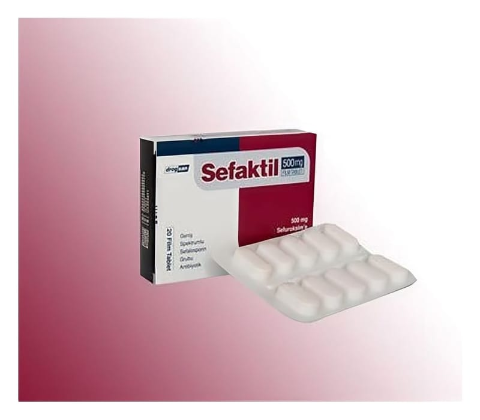

Sefaktil 500 mg Film Tablet, 20 Adet

Ne için kullanılır
KT · Bölüm 1SEFAKTİL, bakteriler üzerinde öldürücü etkiye sahip sefalosporin grubu bir antibiyotiktir. Her tablette etkin madde olarak 500 mg sefuroksim içerir.
SEFAKTİL, 10, 14 ve 20 tabletlik blisterler halinde bulunmaktadır.
SEFAKTİL, bileşimindeki sefuroksim; önemli hedef proteinlere bağlanarak bakterilerde hücre duvarı sentezini önleyerek öldürücü etki gösterir. Duyarlı mikroorganizmaların sebep olduğu enfeksiyonların tedavisinde kullanılır. Kullanıldığı başlıca enfeksiyonlar:
• Üst solunum yolu enfeksiyonları: Kulak, burun, boğaz enfeksiyonları, orta kulak iltihabı, sinüzit, bademcik iltihabı, farenjit (yutak iltihabı) gibi. • Alt solunum yolu enfeksiyonları: Akut bronşit ve kronik bronşitin ani alevlenmeleri ve pnömoni (akciğer iltihabı) gibi. • Genital enfeksiyonlar ve idrar yolları enfeksiyonları: Piyelonefrit (idrar yolları ve böbrek iltihabı), mesane iltihabı ve idrar yolu iltihabı gibi. • Deri ve yumuşak doku enfeksiyonları: Çıban (furonkül), irinli deri enfeksiyonu (piyoderma), bulaşıcı, yüzeysel, mikrobik deri enfeksiyonu (impetigo) gibi. • Bel soğukluğu (gonore): Akut ve komplike olmayan gonokoklardan kaynaklanan idrar yolu iltihabı ve rahim ağzı iltihabı (servisit). • Erken Lyme hastalığının (kene ısırması ile insana geçen borrelia Burgdorferi adlı bakterinin yol açtığı hastalık) tedavisinde ve takiben yetişkin ve 12 yaştan büyük çocuklarda geç Lyme hastalığının önlenmesinde.
SEFAKTİL‘e duyarlılık, coğrafya ve zaman ile değişkenlik gösterebilir. Mevcut olduğu durumlarda lokal duyarlılık verilerine başvurulmalıdır.